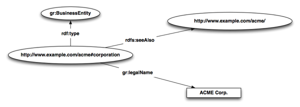
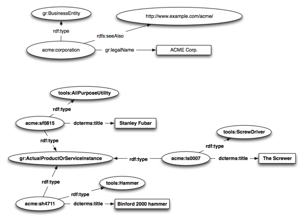
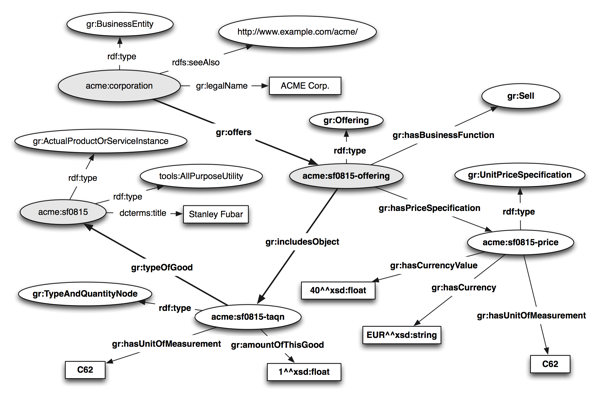
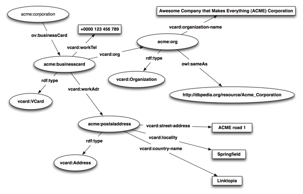
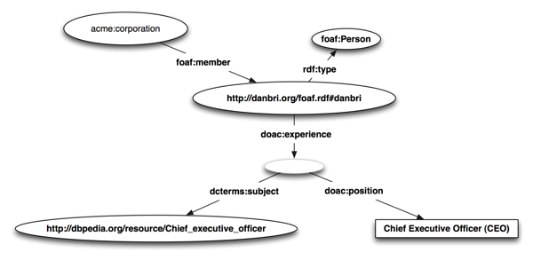
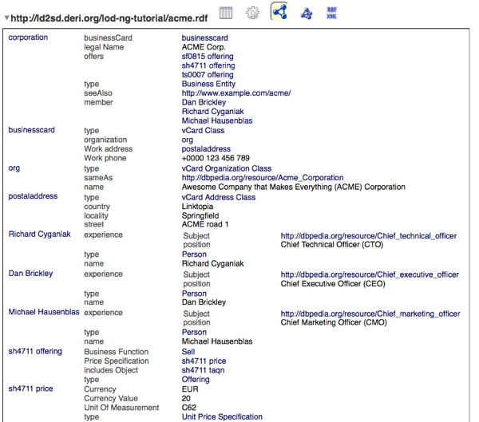

This document provides guidelines for how to create and consume Linked Data embedded in HTML. It extends and updates [[HOWTO-LODP]] and the [[COOL-SWURIS]]] Note. The examples in this document use [[!XHTML-RDFA]] and [[!MICRODATA]] with a special focus on Schema.org vocabulary terms.
This document is an experimental work in progress.
Scope
This is a practical guide to publish and consume Linked Data based on URIs, HTTP and data embedded in HTML (RDFa and microdata). It is in a sense an advanced tutorial as it requires some basic understanding regarding the Linked Data principles.
Introduction
Throughout the document, the following namespaces are used:
@prefix schema: <http://schema.org/> .
@prefix rdf: <http://www.w3.org/1999/02/22-rdf-syntax-ns#> .
@prefix rdfs: <http://www.w3.org/2000/01/rdf-schema#> .
@prefix owl: <http://www.w3.org/2002/07/owl#> .
@prefix xsd: <http://www.w3.org/2001/XMLSchema#> .
@prefix dc: <http://purl.org/dc/terms/> .
@prefix foaf: <http://xmlns.com/foaf/0.1/> .
@prefix acme: <http://www.example.com/acme#> .
@prefix dbpedia: <http://dbpedia.org/resource/> .
Motivation
Linked Data refers to a set of best practices for publishing and interlinking structured data on the Web. Essentially, the idea of Linked Data is to apply the general architecture of the WWW to the task of sharing structured data on a global scale. Technically, Linked Data is about employing Uniform Resource Identifiers (URIs), the Resource Description Framework (RDF) and the Hypertext Transfer Protocol (HTTP) to publish structured data on the Web and to connect related data that is distributed across multiple data sources.
The Linked Data community has established a number of good practices around publishing and consuming. From publishing Linked Data [[HOWTO-LODP]] and URI management [[COOL-SWURIS]] over describing Linked Data datasets [[VOID-GUIDE]] to Linked Data applications. There are tutorials and guides available, maintained by the community and the number of triples in the Linked Data cloud doubled in size every 10 months since 2007.
Whilst the majority of the efforts regarding publishing Linked Data has focused so far on exposing the data via RDF/XML or NTriples, data embedded in HTML (RDFa and microdata) has gathered momentum and offers a valuable and easy to use alternative route to Linked Data publishing.
TODO: introduce and explain Schema.org (terms, coverage, model, etc.)
This document guides the interested reader to publishing and consuming Linked Data with data embedded in HTML (RDFa and microdata). For example, let as assume we want to express the authorship of this note:
| Human | RDFa | Microdata |
|---|
|
|
<div about="">
<a rel="schema:author"
href="http://richard.cyganiak.de/foaf.rdf#cygri">Richard</a>,
<a rel="schema:author"
href="http://sw-app.org/mic.xhtml#i">Michael</a>
and
<a rel="schema:author"
href="http://greggkellogg.net/foaf#me">Gregg</a>
have written this note.
</div>
|
<div itemscope itemid="http://www.w3.org/2001/sw/interest/ldh/">
<a itemprop="author"
href="http://richard.cyganiak.de/foaf.rdf#cygri">Richard</a>,
<a itemprop="author"
href="http://sw-app.org/mic.xhtml#i">Michael</a>
and
<a itemprop="author"
href="http://greggkellogg.net/foaf#me">Gregg</a>
have written this note.
</div>
|
The resulting RDF triples (throughout shown using RDF Turtle [[!TURTLE]] serialization) from the above RDFa snippet are essentially:
<> schema:author <http://richard.cyganiak.de/foaf.rdf#cygri>,
<http://sw-app.org/mic.xhtml#i>,
<http://greggkellogg.net/foaf#me> .
The RDFa/microdata snippet above is actually a basic dataset; it interlinks data from this note with information about people with a so called interlinking property, namely dc:author. If one wants to, for example, find out who the authors of this note are, one can use the following SPARQL query:
PREFIX schema: <http://schema.org/>
SELECT ?note ?authors
WHERE {
?note schema:author ?authors .
}
The above shown query can be executed in a SPARQL engine such as http://sparql.org/sparql with this note as the input RDF document. Note that, as most SPARQL engines nowadays do not support RDFa directly, one has to convert the input document first to RDF/XML, for example using the RDFa Distiller.
TODO: add the microdata (md) version of all the examples below and change to Schema.org terms, were possible
Interestingly, the capabilities of this piece of data are not yet exhausted. Rather than having a sheer list of strings, one is eventually provided with two URIs. These URIs (which happen to identify two people) can be looked up, or dereferenced, in Linked Data speak. When dereferencing one of the person URIs, one gets more data.
Note that entities (real world things or concepts such as a product) throughout the document are highlighted as so: entity, whereas URIs (identifiers of entities) will be rendered as so: http://yadayadayada.da#Entity - unless otherwise stated, the well-known namespaces, such as for RDF, RDF-S, FOAF, etc. are assumed to be declared up-front (in the head of the HTML document), see also the very useful prefix look-up service http://prefix.cc. Further, note that the example used throughout this note is as well available as a stand-alone document, acme.html, ready to be used as a boiler-plate.
Before continuing with this note, one should contemplate if the prerequisites for understanding and applying the following are available. As we not intent to repeat stuff that has been written elsewhere (or at least avoid too much redundancy), one may consider:
-
Reading a basic introduction into URIs, such as What's a URI and why does it matter? or even consult the URI specification [[!RFC3986]];
-
A second step worth performing is to read the first few sections of the How to Publish Linked Data on the Web tutorial [[HOWTO-LODP]];
-
Last but not least one should be familiar with the syntaxes used in here for the data embedded in HTML (RDFa and microdata).
Setting the Scene
For the purpose of demonstration, let us assume that we deal with a company called ACME Corp., which is offering product information about tools they want to sell, such as shown in the Table 1, below. There are numerical and textual values, prices, column heads and cells conveying the actual information about the tools ACME Corp. is selling.
Table 1.: ACME Corp.'s product information table.
| Human | Machine |
|---|
|
The ACME Corp. offers following tools for purchase:
| Name | Description | Price [in €] |
| Stanley Fubar | All-purpose destroy utility. | 40 |
| Binford 2000 hammer | Your best friend for nails and more, top US quality. | 20 |
| The Screwer | For any kind of screw-driving, produced in the UK. | 10 |
|
<p>
The <a href="http://www.example.com/acme/">ACME Corp.</a>
offers following tools for purchase:
</p>
<table class="xtab">
<tr>
<th>Name</th><th>Description</th><th>Price [in €]</th>
</tr>
<tr>
<td>Stanley Fubar</td>
<td>All-purpose destroy utility.</td>
<td>40</td>
</tr>
<tr>
<td>Binford 2000 hammer</td>
<td>Your best friend for nails and more, top US quality.</td>
<td>20</td>
</tr>
<tr>
<td>The Screwer</td>
<td>For any kind of screw-driving, produced in the UK.</td>
<td>10</td>
</tr>
</table>
|
The product information in Table 1. is perfectly accessible to humans. Once the table gets longer and/or certain filter or search operations are desired, an application consuming this table will have hard times, as it is not aware of the semantics of the cells and the data contained in it. Further, reuse of information, such as country, tax or shipping information (for example found in Wikipedia) can not easily be implemented. Using URIs and RDFa, we will show, step-by-step, how to turn the product information table above into a small-sized Linked Data dataset, offering information reuse, data integration, structured queries and building the base for semantic indexing.
Company Information
We first mint a URI space for the ACME Corp. itself and for their products. Further, we are using the GoodRelations vocabulary (see [GR Primer] for details how to use it) to represent products and company-related information.
- http://www.example.com/acme# ... acme:
- the company information space (contact details, industry, products, etc.)
- http://purl.org/goodrelations/v1# ... gr:
- vocabulary for representing information about companies and their products
In the first step, we describe the company itself, providing the base for further information on its products. In the lines 1-4 we add some basic information about ACME Corp. (identified through the URI http://www.example.com/acme#corporation):
Table 2.: Basic information on the ACME Corp. company.
| Human | Machine |
|---|
|
The ACME Corp. offers following tools for purchase:
| Name | Description | Price [in €] |
| Stanley Fubar | All-purpose destroy utility. | 40 |
| Binford 2000 hammer | Your best friend for nails and more, top US quality. | 20 |
| The Screwer | For any kind of screw-driving, produced in the UK. | 10 |
|
1: <p about="http://www.example.com/acme#corporation" typeof="gr:BusinessEntity">
2: The <a rel="rdfs:seeAlso"
3: href="http://www.example.com/acme/"
4: property="gr:legalName">ACME Corp.</a>
5: offers following tools for purchase:
6: </p>
7: <table class="xtab">
8: <tr>
9: <th>Name</th><th>Description</th><th>Price [in €]</th>
11: </tr>
12: <tr>
13: <td>Stanley Fubar</td>
14: <td>All-purpose destroy utility.</td>
15: <td>40</td>
16: </tr>
17: <tr>
18: <td>Binford 2000 hammer</td>
19: <td>Your best friend for nails and more, top US quality.</td>
20: <td>20</td>
21: </tr>
22: <tr>
23: <td>The Screwer</td>
24: <td>For any kind of screw-driving, produced in the UK.</td>
25: <td>10</td>
26: </tr>
27: </table>
|
The resulting RDF triples from the RDFa snippet in Table 2. are essentially:
@prefix rdfs: <http://www.w3.org/2000/01/rdf-schema#> .
@prefix gr: <http://purl.org/goodrelations/v1#> .
@prefix acme: <http://www.example.com/acme#> .
acme:corporation a gr:BusinessEntity ;
rdfs:seeAlso <http://www.example.com/acme/> ;
gr:legalName "ACME Corp." .
This resulting RDF graph from the RDFa snippet in Table 2. can also be represented visually such as depicted in Fig. 1, below.

Fig. 1.: Basic information on the ACME Corp. company in RDF.
Product Information
In the second step we want to add some details about the products itself. We are using again the GoodRelations vocabulary and a self-defined domain vocabulary for tools:
- http://www.example.com/tools# ... tools:
- the tools domain vocabulary (such as hammer, etc.)
We first have to introduce the new namespace http://www.example.com/tools# that contains domain-specific concepts for tools. For the purpose of demonstration this namespace declaration is here (line 7 in Table 3.) done on the <table> element, potentially restricting its scope to the HTML table at hand. Had we, in contrast, defined it in the HTML head, the tools: namespace would have been declared and usable for the entire document. There are certain situations in the wild (such as a Wiki or a CMS) where you don't have control over the head; under such circumstances it can be useful to 'locally' declare a namespace, and its prefix respectively.
We add, on a per-product basis, some essential information, such as its type: this is done in lines 11-13 for the Stanley Fubar product, in lines 17-19 for Binford 2000 hammer, and in lines 23-25 for The Screwer. Note that for each entity a new URI has been minted in the http://www.example.com/acme# namespace, such as http://www.example.com/acme#sf0815 for the Stanley Fubar product. Further, we have specified the type of the respective entity (lines 12, 18, 24) as required by the GoodRelations vocabulary and reused the human visible information for the product title via the dc:title property of the Dublin Core vocabulary (lines 13, 19, 25).
Table 3.: Basic product information on the tools that ACME Corp. offers.
| Human | Machine |
|---|
|
The ACME Corp. offers following tools for purchase:
| Name | Description | Price [in €] |
| Stanley Fubar | All-purpose destroy utility. | 40 |
| Binford 2000 hammer | Your best friend for nails and more, top US quality. | 20 |
| The Screwer | For any kind of screw-driving, produced in the UK. | 10 |
|
1: <p about="http://www.example.com/acme#corporation" typeof="gr:BusinessEntity">
2: The <a rel="rdfs:seeAlso"
3: href="http://www.example.com/acme/"
4: property="gr:legalName">ACME Corp.</a>
5: offers following tools for purchase:
6: </p>
7: <table class="xtab" xmlns:tools="http://www.example.com/tools#">
8: <tr>
9: <th>Name</th><th>Description</th><th>Price [in €]</th>
10: </tr>
11: <tr about="http://www.example.com/acme#sf0815"
12: typeof="tools:AllPurposeUtility gr:ActualProductOrServiceInstance">
13: <td property="dc:title">Stanley Fubar</td>
14: <td>All-purpose destroy utility.</td>
15: <td>40</td>
16: </tr>
17: <tr about="http://www.example.com/acme#sh4711"
18: typeof="tools:Hammer gr:ActualProductOrServiceInstance">
19: <td property="dc:title">Binford 2000 hammer</td>
20: <td>Your best friend for nails and more, top US quality.</td>
21: <td>20</td>
22: </tr>
23: <tr about="http://www.example.com/acme#ts0007"
24: typeof="tools:ScrewDriver gr:ActualProductOrServiceInstance">
25: <td property="dc:title">The Screwer</td>
26: <td>For any kind of screw-driving, produced in the UK.</td>
27: <td>10</td>
28: </tr>
29: </table>
|
The resulting RDF triples from the RDFa snippet in Table 3. are essentially:
@prefix rdfs: <http://www.w3.org/2000/01/rdf-schema#> .
@prefix dc: <http://purl.org/dc/terms/> .
@prefix gr: <http://purl.org/goodrelations/v1#> .
@prefix tools: <http://www.example.com/tools#> .
@prefix acme: <http://www.example.com/acme#> .
acme:corporation a gr:BusinessEntity ;
rdfs:seeAlso <http://www.example.com/acme/> ;
gr:legalName "ACME Corp." .
acme:sf0815 a tools:AllPurposeUtility, gr:ActualProductOrServiceInstance ;
dc:title "Stanley Fubar" .
acme:sh4711 a tools:Hammer, gr:ActualProductOrServiceInstance ;
dc:title "Binford 2000 hammer" .
acme:ts0007 a tools:ScrewDriver, gr:ActualProductOrServiceInstance ;
dc:title "The Screwer" .
We again give a visual account of the resulting RDF graph from the RDFa snippet in Table 3. (see Fig. 2, below).

Fig. 2.: Basic product information on the tools that ACME Corp. offers in RDF.
Note that the RDF graph in Fig. 2, above, actually consists of two unconnected sub-graphs. The upper half representing the basic company information, the lower half the three product information. This setup factually cries out for being changed, so that the products are connected to the company that is offering them. We will do so in the next step.
Connecting Products with the Company
As stated above, we are now going to connect the products to the company that is offering them. In order to keep the example simple and legible we will only show the modelling and mark-up for one offering. The full example source code can be found in the accompanying document acme.html.
In line 6 of the RDFa snippet in Table 4 we state that ACME Corp. has something to offer, the acme:sf0815-offering, which is defined in detail in the lines 28-32. The offering consists of two major components: the price specification (acme:sf0815-price) and a type/quantity node (acme:sf0815-taqn). The price specification is built around the existing cell content in lines 16-19 and the type/quantity node is represented in a hidden area (lines 23-27).
Table 4.: Connecting products to the company via offerings.
| Human | Machine |
|---|
|
The ACME Corp. offers following tools for purchase:
| Name | Description | Price [in €] |
| Stanley Fubar |
All-purpose destroy utility. |
40
|
|
1: <p about="http://www.example.com/acme#corporation" typeof="gr:BusinessEntity">
2: The <a rel="rdfs:seeAlso"
3: href="http://www.example.com/acme/"
4: property="gr:legalName">ACME Corp.</a>
5: offers following tools for purchase:
6: <span rel="gr:offers" resource="http://www.example.com/acme#sf0815-offering"></span>
7: </p>
8: <table class="xtab" xmlns:tools="http://www.example.com/tools#">
9: <tr>
10: <th>Name</th><th>Description</th><th>Price [in €]</th>
11: </tr>
12: <tr about="http://www.example.com/acme#sf0815"
13: typeof="tools:AllPurposeUtility gr:ActualProductOrServiceInstance">
14: <td property="dc:title">Stanley Fubar</td>
15: <td>All-purpose destroy utility.</td>
16: <td about="http://www.example.com/acme#sf0815-price" typeof="gr:UnitPriceSpecification">
17: <span property="gr:hasCurrency" content="EUR" datatype="xsd:string" />
18: <span property="gr:hasCurrencyValue" datatype="xsd:float">40</span>
19: <span property="gr:hasUnitOfMeasurement" content="C62"></span>
20: </td>
21: </tr>
22: </table>
23: <div about="http://www.example.com/acme#sf0815-taqn" typeof="gr:TypeAndQuantityNode">
24: <span property="gr:amountOfThisGood" content="1.0" datatype="xsd:float"></span>
25: <span property="gr:hasUnitOfMeasurement" content="C62"></span>
26: <span rel="gr:typeOfGood" resource="http://www.example.com/acme#sf0815"></span>
27: </div>
28: <div about="http://www.example.com/acme#sf0815-offering" typeof="gr:Offering">
29: <span rel="gr:hasBusinessFunction" resource="http://purl.org/goodrelations/v1#Sell"></span>
30: <span rel="gr:hasPriceSpecification" resource="http://www.example.com/acme#sf0815-price"></span>
31: <span rel="gr:includesObject" resource="http://www.example.com/acme#sf0815-taqn"></span>
32: </div>
|
The resulting RDF triples from the RDFa snippet in Table 4. are essentially:
@prefix rdfs: <http://www.w3.org/2000/01/rdf-schema#> .
@prefix dc: <http://purl.org/dc/terms/> .
@prefix gr: <http://purl.org/goodrelations/v1#> .
@prefix tools: <http://www.example.com/tools#> .
@prefix acme: <http://www.example.com/acme#> .
acme:corporation a gr:BusinessEntity ;
rdfs:seeAlso <http://www.example.com/acme/> ;
gr:legalName "ACME Corp." ;
gr:offers acme:sf0815-offering .
acme:sf0815-offering a gr:Offering ;
gr:hasBusinessFunction gr:Sell ;
gr:hasPriceSpecification acme:sf0815-price ;
gr:includesObject acme:sf0815-taqn .
acme:sf0815-price a gr:UnitPriceSpecification ;
gr:hasCurrency "EUR"^^xsd:string ;
gr:hasCurrencyValue "40"^^xsd:float ;
gr:hasUnitOfMeasurement "C62" .
acme:sf0815-taqn a gr:TypeAndQuantityNode ;
gr:amountOfThisGood "1.0"^^xsd:float ;
gr:hasUnitOfMeasurement "C62" ;
gr:typeOfGood acme:sf0815 .
acme:sf0815 a tools:AllPurposeUtility, gr:ActualProductOrServiceInstance ;
dc:title "Stanley Fubar" .
A visual representation of the resulting RDF graph from the RDFa snippet in Table 4. is shown in Fig. 3, below. We note that the key path for the connection between the company and the product, that is acme:corporation - gr:offers -> acme:sf0815-offering,
acme:sf0815-offering - gr:includesObject -> acme:sf0815-taqn, and finally acme:sf0815-taqn - gr:typeOfGood -> acme:sf0815
is highlighted for better understanding.

Fig. 3.: Connecting products to the company via offerings in RDF.
With the data we have so far, we are now able to perform a query such as shown below, allowing to retrieve pricing information about a certain tool along with the providing party (a company):
PREFIX gr: <http://purl.org/goodrelations/v1#>
PREFIX tools: <http://www.example.com/tools#>
PREFIX dc: <http://purl.org/dc/terms/>
SELECT ?label ?curval ?cur ?provname
WHERE {
?offering a gr:Offering ;
gr:includesObject ?object ;
gr:hasPriceSpecification ?pricespec .
?object gr:typeOfGood ?item .
?item a tools:Hammer ;
dc:title ?label .
?pricespec gr:hasCurrency ?cur ;
gr:hasCurrencyValue ?curval .
?provider gr:offers ?offering ;
gr:legalName ?provname .
}
When the above shown query is executed in a SPARQL engine the result is as follows:
| label | curval | cur | provname |
| "Binford 2000 hammer" | "20"^^<http://www.w3.org/2001/XMLSchema#float> | "EUR"^^<http://www.w3.org/2001/XMLSchema#string> | "ACME Corp." |
More Company Information
Let us now step back a bit and return to something simple though very useful in everyday commercial but also private life. We assume one wants to express some more detailed information about how to contact a company (section 5.1) or who the people behind the company are (section 5.2). As usual we suggest to consult the stand-alone example acme.html to see the entire code in action.
Contact Information
TODO: change vCard modelling; actually the acme:coporation itself is a vCard:Organization
In order to express what we desire to express we introduce two new namespaces:
- http://www.w3.org/2006/vcard/ns# ... vcard:
- the vocabulary for business card details (such as address, etc.)
- http://open.vocab.org/terms/# ... ov:
- a vocabulary repository; we use just one property from it,
ov:businessCard, to relate the company with its business card
As already mentioned, with ov:businessCard the acme:businesscard is connected to the ACME Corp. (acme:corporation) in line 3 and in line 12/13 the corporation is interlinked with DBpedia. In the lines 16-25 further details, such as street address, etc. are given.
Table 5.: Some company contact details.
| Human | Machine |
|---|
Contact
Awesome Company that Makes Everything (ACME) Corporation
ACME road 1,
Springfield,
Linktopia
Tel.: +0000 123 456 789
|
1: <div class="xsec" about="http://www.example.com/acme#corporation">
2: <h3>Contact</h3>
3: <div class="bc" rel="ov:businessCard">
4: <div about="http://www.example.com/acme#businesscard"
5: typeof="vcard:VCard">
6: <div rel="vcard:org">
7: <div about="http://www.example.com/acme#org"
8: typeof="vcard:Organization">
9: <span property="vcard:organization-name"
10: >Awesome Company that Makes Everything (ACME) Corporation</span>
11: <span rel="owl:sameAs"
12: resource="dbpedia:Acme_Corporation" />
13: </div>
14: </div>
15: <div rel="vcard:workAdr">
16: <div about="http://www.example.com/acme#postaladdress"
17: typeof="vcard:Address">
18: <span property="vcard:street-address">ACME road 1</span>,
19: <span property="vcard:locality">Springfield</span>,
20: <span property="vcard:country-name">Linktopia</span>
21: </div>
22: </div>
23: Tel.: <span property="vcard:workTel">+0000 123 456 789</span>
24: </div>
25: </div>
26: </div>
|
The resulting RDF triples from the RDFa snippet in Table 5. are essentially (with DBpedia interlinking highlighted):
@prefix acme: <http://www.example.com/acme#> .
@prefix ov: <http://open.vocab.org/terms/> .
@prefix vcard: <http://www.w3.org/2006/vcard/ns#> .
acme:corporation ov:businessCard acme:businesscard .
acme:businesscard a vcard:VCard ;
vcard:org acme:org ;
vcard:workAdr acme:postaladdress ;
vcard:workTel "+0000 123 456 789" .
acme:org a vcard:Organization ;
owl:sameAs dbpedia:Acme_Corporation ;
vcard:organization-name "Awesome Company that Makes Everything (ACME) Corporation" .
acme:postaladress a vcard:Address ;
vcard:country-name "Linktopia" ;
vcard:locality "Springfield" ;
vcard:street-address "ACME road 1" .
The visual representation of the RDF graph from the RDFa snippet in Table 5. is shown in Fig. 4, below.

Fig. 4.: Some company contact details in RDF.
Team Information
In the next step we will add some information about the people behind the company, using FOAF and DOAC vocabularies. Note that acme.html contains the entire mark-up; we will show here only the code for one person. The following namespaces are from now on used:
- http://xmlns.com/foaf/0.1/ ... foaf:
- the vocabulary for social terms (such as a person or to be a member of a group)
- http://ramonantonio.net/doac/0.1/# ... doac:
- a vocabulary to describe professional capabilities, for example a position in a company
- http://dbpedia.org/resource/ ... dbpedia:
- the DBpedia resources namespace
A person is connected to the company using the interlinking property foaf:member (line 8). In the line 9 of Table 6 we define the person information reusing a person's URI (from his FOAF file). The lines 13 and 14 bear an additional interlinking: we overlay the primary textual description of a person's position (the 'Chief Executive Officer (CEO)' part) with an interlinking (the dc:subject property) to DBpedia, basically stating that the topic of the object at hand is something which's description is available at dbpedia:Chief_executive_officer. Note that one could either use this interlinking to DBpedia to (i) gather further information about what a CEO actually is, or (ii) use it in a query to find out who the CEO of a given company is. We will demo the latter usage in an exemplary query, below.
Table 6.: Some details about the team.
| Human | Machine |
|---|
Team
Our dedicated team consists of:
|
1: <div class="xsec" about="http://www.example.com/acme#corporation">
2: <h3>Team</h3>
3: <div>
4: <p>
5: Our dedicated team consists of:
6: </p>
7: <ul>
8: <li rel="foaf:member">
9: <div about="http://danbri.org/foaf.rdf#danbri" typeof="foaf:Person">
10: <a href="http://danbri.org/about.html">Dan Brickley</a>,
11: <span rel="doac:experience">
12: <span property="doac:position"
13: rel="dc:subject"
14: resource="http://dbpedia.org/resource/Chief_executive_officer"
15: >Chief Executive Officer (CEO)</span>
16: </span>
17: </div>
18: </li>
19: </ul>
20: </div>
21: </div>
|
The resulting RDF triples from the RDFa snippet in Table 6. are shown in the following. We note that the object of the doac:experience property is a so called blank node (or bnode) as we have not minted a URI for it. The semantics of this resource does not change, though: the experience of the denoted person has dbpedia:Chief_executive_officer as a topic.
@prefix acme: <http://www.example.com/acme#> .
@prefix foaf: <http://xmlns.com/foaf/0.1/> .
@prefix doac: <http://ramonantonio.net/doac/0.1/#> .
@prefix dc: <http://purl.org/dc/terms/> .
@prefix dbpedia: <http://dbpedia.org/resource/> .
acme:corporation foaf:member <http://danbri.org/foaf.rdf#danbri> .
<http://danbri.org/foaf.rdf#danbri> a foaf:Person ;
doac:experience [
dc:subject dbpedia:Chief_executive_officer ;
doac:position "Chief Executive Officer (CEO)"
] .
The visual representation of the RDF graph from the RDFa snippet in Table 6. is shown in Fig. 5, below.

Fig. 5.: Some details about the team in RDF.
As pointed out above we can use the data we have so far to perform a query such as shown below. This query allows us to find out who the members of the team of the ACME Corp. are (note that acme.html provides, as usual, the full code, including foaf:names for human legible labels of the person's name):
PREFIX foaf: <http://xmlns.com/foaf/0.1/>
PREFIX doac: <http://ramonantonio.net/doac/0.1/#>
PREFIX dc: <http://purl.org/dc/terms/>
SELECT ?name ?position ?description
WHERE {
<http://www.example.com/acme#corporation> foaf:member ?person .
?person foaf:name ?name ;
doac:experience ?exp .
?exp doac:position ?position ;
dc:subject ?description .
}
When the above shown query is executed in a SPARQL engine (again with acme.html as the input RDF document), the result is as follows:
| name | position | description |
| "Michael Hausenblas" |
"Chief Marketing Officer (CMO)" |
<http://dbpedia.org/resource/Chief_marketing_officer> |
| "Dan Brickley" |
"Chief Executive Officer (CEO)" |
<http://dbpedia.org/resource/Chief_executive_officer> |
| "Richard Cyganiak" |
"Chief Technical Officer (CTO)" |
<http://dbpedia.org/resource/Chief_technical_officer> |
Real-World Checklist
After having understood the basics of publishing Linked Data with data embedded in HTML (RDFa and microdata), we are now going to discuss issues in a typical real-world setup by providing a sort of checklist. You may want to follow this step-by-step, as the items on the list build on each other, or directly jump to the relevant part, in case you are familiar with the basic handling of data embedded in HTML (RDFa and microdata). We summarise the checklist for your convenience in the following:
Preparation
RDFa
In order to set up the Linked Data dataset in RDFa, only few steps are necessary (see also section 2. Conformance of the [[!XHTML-RDFA]]). One usually would start with a template, such as shown below.
<?xml version="1.0" encoding="UTF-8"?>
<!DOCTYPE html PUBLIC "-//W3C//DTD XHTML+RDFa 1.0//EN" "http://www.w3.org/MarkUp/DTD/xhtml-rdfa-1.dtd">
<html xmlns="http://www.w3.org/1999/xhtml"
prefix="geo: http://www.w3.org/2003/01/geo/wgs84_pos#
ov: http://open.vocab.org/terms/">
<head>
<title>My First Linked Dataset in RDFa</title>
</head>
<body>
...
</body>
</html>
We note that the @prefix declarations (prefix) in the header are essential, as most RDFa processors will ignore any terms of vocabularies with unknown prefixes. Typically this declaration is done in the html element, it can, however be done on any level, that is, on any HTML element that contains RDFa. We again highlight the prefix look-up service http://prefix.cc to find most common prefixes, their namespace URIs and various serialization stubs (incl. RDFa).
RDFa defines many standard prefixes and terms in default profiles [[RDFA-CORE-PROFILE]] and [[XHTML-RDFA-PROFILE]]. These include definitions for dc, foaf, gr, owl, rdf, rdfs, and vcard namespaces, among many others.
Finally, one should serve the Linked Data dataset in RDFa with the media type application/xhtml+xml as of section 2.1. Document Conformance of the [[!XHTML-RDFA]]). As a practical aside we note that following this rule may cause certain Web browser that choose to ignore XHTML and media type declarations to not render the document properly for humans. We will come back to this issue, below, in section 6.3 Serving Content.
It is also possible to serve RDFa content as non-XML HTML5 content with the media type text/html as of section 2.1. Document Conformance of the [[!HTML-RDFA]]).
Microdata
TODO: add md setup
Validation
RDFa
After having set up the skeleton and filling it with content (for both humans and machines), there are three golden rules: validate, validate, and validate. See also Why and How to validate RDFa and, finally, don't forget to add the RDFa conformance statement (as a result of the W3C validator) to your page, such as shown below.
| Human | Machine |
|---|
|
|
<div about="" rel="dc:conformsTo" resource="http://www.w3.org/TR/rdfa-syntax"
xmlns:dc="http://purl.org/dc/terms/">
<a href="http://validator.w3.org/check?uri=referer">
<img src="http://www.w3.org/Icons/valid-xhtml-rdfa-blue" alt="Valid XHTML + RDFa"/>
</a>
</div>
|
Microdata
TODO: add md validation
Serving Content
RDFa
When publishing Linked Data in RDFa it is essential to note that indeed one publishes for both humans and machines in one document. Both parties deserve an appropriate view on the content. Humans usually prefer HTML and the nicely rendered output in their User Agent, a Web browser, whilst machines such as Web of Data browser, data integrator or crawler prefer an RDF representation. Obviously, RDFa can deliver both from one resource. Whilst RDFa is technically just another RDF graph [[RDF-CONCEPTS]] serialisation syntax, there may be cases (what we call 'legacy systems', from the RDFa point-of-view, in the following) that accept RDF/XML as the only RDF serialisation syntax. One example of such class of systems are SPARQL engines or SPARQL endpoints. We hence should support legacy systems and serve RDF/XML, additionally, if requested via content negotiation (cf. also section 12 of the HTTP specification [[!RFC2616]]). This issue is relevant for both the server side and the client side:
Server. One good practice how to serve RDF/XML from RDFa with a popular Web server is described in Ivan Herman's recipe Setting up an RDFa file with Apache.
Client. A valuable introduction into client-side investigations regarding content preferences can be found in the What is your RDF browser's Accept header? blog post by Richard Cyganiak.
Microdata
TODO: add md serving
Resulting Triples Check
RDFa
One thing people sometimes forget to check is if the RDF triples are correctly generated or, better say, if at least the triple they'd expect are generated. Depending on your RDFa processor of your choice additional triples may be generated.
TODO: add Operator screen shot showing additional triples from XHTML namespace
Let us take acme.html as an example. When running this document through RDFa Distiller, an online-service converting the RDFa in other serialisations such as RDF/XML or Turtle, it yields an RDF graph, which can be viewed in an Web of Data browser, such as Tabulator (see Fig. 6).

Fig. 6.: ACME Corp.'s entire RDF graph viewed in Tabulator browser.
TODO: add Inspector example
One should indeed go even a step further and validate the resulting RDF graph using, for example, W3C's RDF Validation Service to ensure that the so generated RDF is valid. We note that this does not mean that the RDF graph makes sense, that is you can not check its semantic validity automatically, currently. The good news is that a human usually can, just by simple inspection of the RDF graph as described above, rather quickly tell if the RDF graph is shaped as expected.
Microdata
TODO: add md triples
Dynamic Content
RDFa
When using RDFa for Linked Data, one issue may eventually arise with client-side, DOM-based implementations. We point the interested reader to the discussion on dynamic content (Ajax issues) on the RDFa Wiki for further details. There are certain client-side RDFa processors (mostly based on JavaScript) available, for example rdfquery, allowing to extract, manipulate or query RDFa in a Web browser.
While client-side handling of RDFa is understood to cause no worrying issues, the consumption of it can lead to problems. An external service consuming a document that has DOM-based enhanced RDFa in it can obviously not directly access the RDF graph. Currently no widely accepted work-arounds are known, however, one may wish to provide the so generated RDF graph at a public accessible URI, that is, provide a sort of export functionality for it.
Microdata
TODO: add md dyna
Usability Issues
RDFa
One practical issue you may want to check against sometimes occurs with fine-grained, high-volume datasets. Imagine a detailed description of audio-visual content (say, a one hour video incl. audio track) in RDF, or, equally, a detailed RDF representation of a multi-dimensional table of statistics, with dozens of columns and potentially thousands of rows. In both cases, one ends up with potentially many triples, which might mean some 100k triple or more. As both humans and machines are expected to consume the RDFa document, one certainly has to find a trade-off between using RDFa for the entire description (meaning to embed all triples in the HTML document) and an entirely externalised solution, for example using RDF/XML:
-
The all-in-RDFa approach. Having the entire RDF graph embedded certainly is desirable, however, one has to check the usability of the site. Usability expert Jakob Nielsen advocates a size limit for Web pages yielding an approximate 10 sec response time limit. Based on this we propose to perform a simple sort of response time testing, once with the plain HTML page and once with the embedded RDF graph. In case of a significant difference, one should contemplate if the all-in-RDFa approach is appropriate for the use case at hand.
-
The global-in-RDFa-rest-via-seeAlso approach. When the above mentioned response time test indicates that the page would load significantly slower (i.e., exceeding the 10 sec limit) with the entire RDF graph embedded in the HTML page, one can alternatively embed some data in RDFa and point to the location of the entire graph, which can then, for example, be provided in RDF/XML. Regarding this case, we advise to provide global metadata (such as author, license, topics, etc.) in RDFa, whilst using
rdfs:seeAlso to reference the location of the entire RDF graph.
We are aware that no one-size-fits-it-all solution to this issue exists, however want to raise awareness and provide some basic guidelines. Additional methods and measures are welcome.
Microdata
TODO: add md usability
HTML Fragments
RDFa
Beside some exceptions one should avoid (re)using the fragment IDs defined in an HTML document in URIs denoting domain entities. One such an exception is for example an RDForm, where one talks actually about HTML forms themselves. For more details on this issue, we refer the reader to Benjamin Nowack's discussion on using fragment identifiers in resource URIs and the respective section 3.2. URI design and more of the RDFa vs. RDF/XML page at the ESW Wiki.
Microdata
TODO: add md fragments
Historical Synopsis
We give a brief historical synopsis of the vivid relation between Linked Data and RDFa in the following.
For a general review of the beginning we refer the reader to other sources, such as Mike Bergman's Linked Data Comes of Age or Tom Heath's No more toy examples - the Linking Open Data project, one year on and his follow-up blog post on The Linked Data Landscape in 2008.
In the early days of Linked Data (around 2007), roughly a year after Tim Berners-Lee's original Linked Data principles note, the common understanding was that Linked Data supposed to be published in RDF/XML along with content negotiation. This takes no wonder, as RDFa back then was not yet an official standard and hence not widely supported by tools and in the community.
While first ideas can be traced back to mid 2007, the first Linked Data dataset published in RDFa (riese) was announced in early 2008. Various others, such as the widely acknowledged LCSH.info dataset followed. In the following a timeline is depicted, summarising some key events in the Linked Data/RDFa realm.
| Event | Date |
| Tim Berners-Lee publishes the Linked Data principles. |
07/2006 |
| The Linking Open Data community project is kicked-off. |
02/2007 |
| Chris Bizer, Richard Cyganiak, and Tom Heath publish the first version of the How to Publish Linked Data on the Web tutorial. |
07/2007 |
| A first trace of publishing Eurostat data as Linked Data in RDFa. |
08/2007 |
| Peter Krantz is working on eurlex.nu, a website containing a collection of European Union legislation, exposed as Linked Data/RDFa. |
09/2007 |
| The announcement of riese, the first Linked Data dataset in RDFa. |
01/2008 |
| Bob DuCharme's post on The future of RDFa, mentioning Linked Data. |
02/2008 |
| David Peterson discusses The hidden side of Linked Data. |
03/2008 |
| Michael Hausenblas on What do linked-data and RDFa have in common? |
03/2008 |
| Sergio Fernandez announces RDFohloh, an RDF(a) wrapper of Ohloh. |
05/2008 |
| Ed Summers announces LCSH, the Library of Congress Subject Headings in SKOS/RDFa, available as Linked Data dataset. |
06/2008 |
| RDFa becomes a W3C Recommendation. |
10/2008 |
| The LCSH dataset has to be taken off-line. |
12/2008 |
| Bradley P. Allen announces t4gm.info, a Linked Data rendering of the Thesaurus of Graphic Materials available in RDFa. |
01/2009 |
| Tim Berners-Lee speaks on Linked Data at TED. |
02/2009 |
| OpenLink launches its http://linkeddata.uriburner.com/ service, exposing various Linked Data as RDFa, along with respective VoID descriptions. |
02/2009 |
| Linked data in RDFa becomes more and more mainstream: from
slideshare.com over
Drupal to
Digg. |
time of writing |
Acknowledgments
The editors are very thankful for comments and suggestions on earlier drafts, especially from: Dan Brickley, Sarven Capadisli, Simon Reinhardt, Raphaël Troncy.
The work has partly been supported by the following projects:
- The EC FP7 project LOD-Around-The-Clock Support Action (LATC)
- Science Foundation Ireland project SFI/08/CE/I1380 Lion2